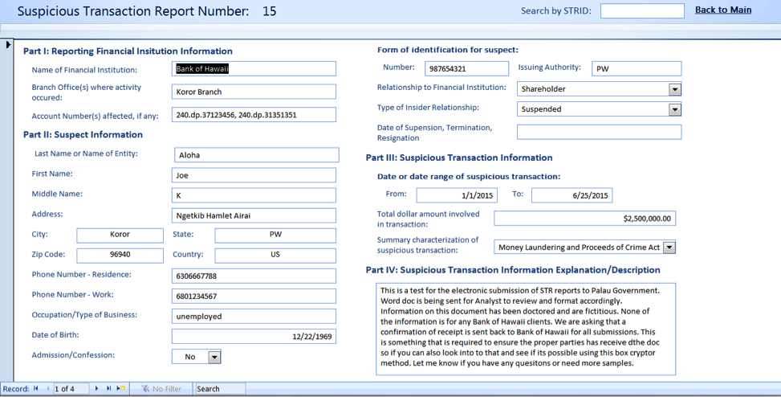
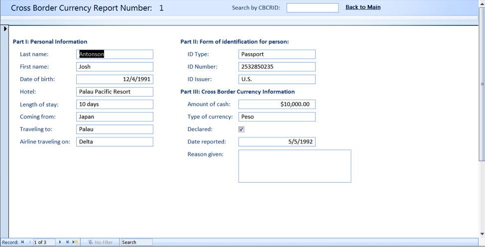
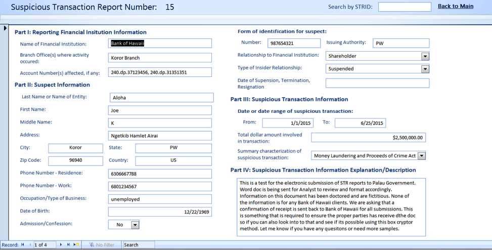
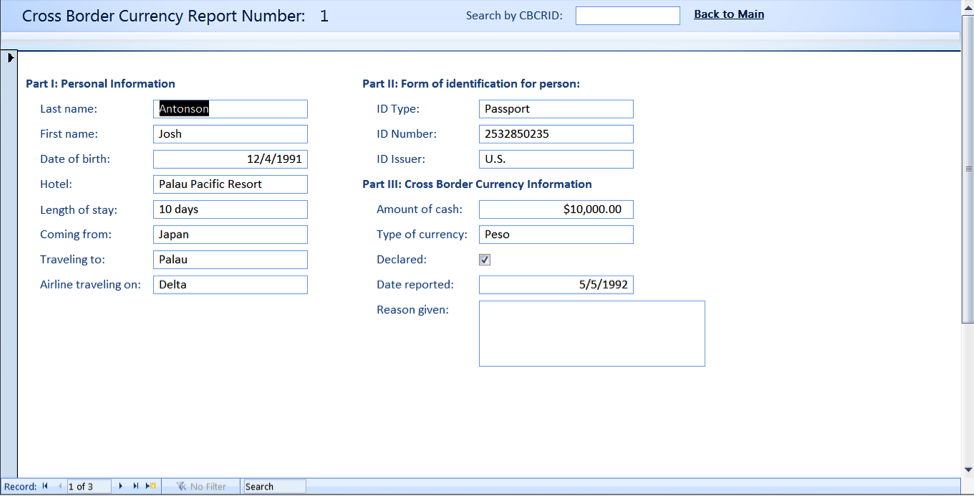
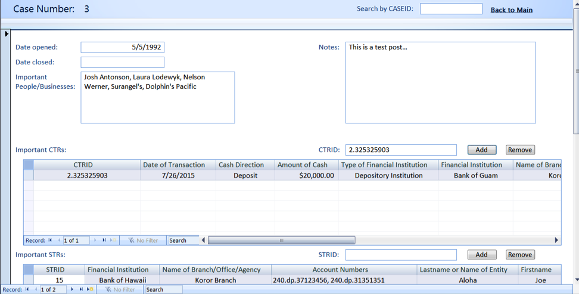
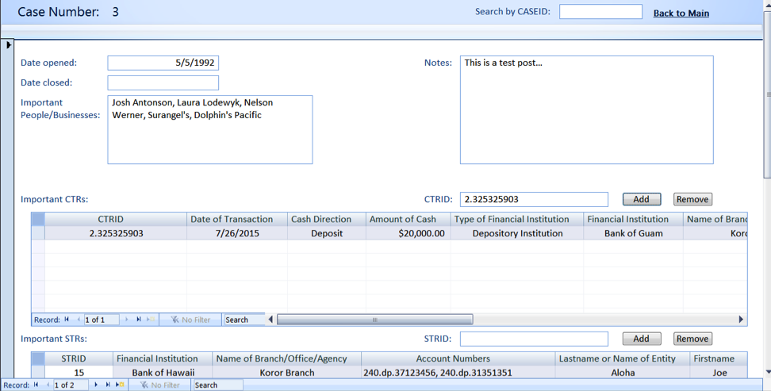
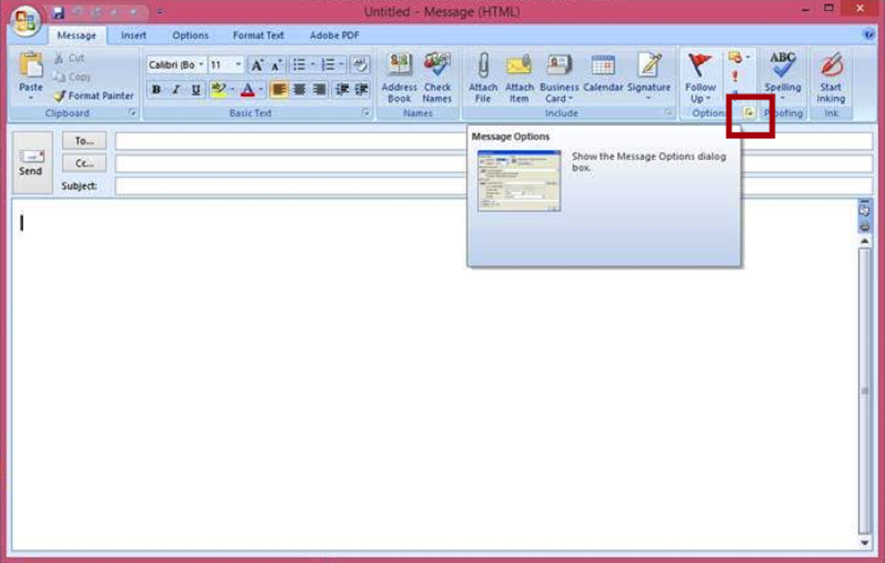

As part of the Technology and Consulting in the Global Community Program through Carnegie Mellon University, I spent 10 weeks in the Republic of Palau consulting for the Financial Intelligence Unit during Summer 2015.

Project Description
The Financial Intelligence Unit (FIU) is a government organization that monitors all financial activity in Palau. From the three banks in Palau, the FIU receives Cash Transaction Reports (CTRs) and Suspicious Transaction Reports (STRs). From Customs, the FIU receives Cross Border Currency Reports (CBCRs). These reports provide the basis for any investigations into money laundering or terrorist financial activity.
Previously, all CTRs, STRs, and CBCRs were submitted to the FIU in paper format. Having these reports in paper format created many issues that hindered the FIU's ability to perform the analysis that are integral to its functioning.
Another student and myself completed the following tasks:
Built and deployed a Microsoft Access database that enabled efficient search and analysis of financial reports.
Enabled electronic reporting between various financial institutions and the FIU through secure electronic transfer of reports in documented CSV file format.
Trained staff of the FIU to use the Microsoft Access database and to efficiently import data into the database.
Created a website to provide information about the FIU in Palau, raise awareness of the effects of money laundering, and help the FIU establish credibility with other government entities.
Microsoft Access Database
The database application was created with the following features:
A Main Form to search the database for CTRs, STRs, CBCRs, Companies, and Cases that match a specified name, date, and/or account number.
Forms to manually upload/edit/delete CTRs, STRs, CBCRs, and Important Companies.
A Case Analysis Form to keep track of key information related to ongoing cases.
The ability to generate reports related to CTRs and STRs by key persons or date.
 



 

Electronic Reporting
To gain a better understanding of the current process of reporting CTRs and STRs, we met with the branch Presidents of the Palauan banks and discussed how current reporting is processed and how it is electronically sent to FINCen.
After this initial meeting, we proposed an electronic reporting process in which report files were encrypted locally and uploaded by the banks to a secure location for the FIU to download and decrypt. We created a document detailing the preferred submission format and provided example report CSV files, which was delivered to the banks for feedback.

Through further discussions with the Bank of Hawaii, we discovered that reports are generated automatically for FINCen by the bank's computer system, which was created by an outside vendor FIS, and are only available in PDF format for the FIU. To be able to have seperate reports created that fit the CSV format desired by the FIU, the main branch would have to discuss it with FIS and obtain a cost analysis.
Since the bank's compliance officers and lawyers would need to spend extra time verifying the security of Box, a third party storage system, they suggested an alternative solution of sending reports via encrypted email using their exisiting encryption system. In order to speed up the timeline, the FIU agreed to using encrypted email and we trained the staff on using public key encryption in Microsoft Outlook.
We created import routines in the Microsoft Access database to allow FIU staff to easily import the report data from the CSV files into the database.

The banks are still in the process of creating reports in our specified CSV format, so they are not currently submitting reports electronically.
Training FIU Staff
An original prototype of the database containing only the CTRs and STRs forms/queries was created a presented to Boboy around week 6. He was able to test the prototype and begin to input old data into the database through the appropriate forms. Through this testing, we discovered and fixed small bugs and tweaked the design of the system, as well as allowed Boboy to gain familiarity with the database application.
The final version of the database was deployed to both Nelson's, the Director of the FIU, and Boboy's computers. They each had one week to manually enter data and test the system before the consultants left and were able to gain familiarity with the final version.
In order to mitigate the risk that the consultants will not be there once the banks start to submit reports electronically, there were multiple trial runs of submission. The consultants encrypted and emailed test CSV reports to Boboy. Boboy then downloaded and decrypted the CSV reports and imported them into the database.
Life in Palau
We were fortunate enough to have a meeting with the President of Palau, Tommy Remengesau, where we discussed our completed project and his vision for using technological development to solve key problems in Palau.
Highlights from the summer include: kayaking and snorkeling trips to Nikko Bay and Risong Bay, cultural nights every other Wednesday, Jellyfish Lake, the Milky Way, swimming with dolphins, a weekend trip to Peleliu, hiking to Ngardmau Waterfall, and exploring the Rock Islands with the locals.


More Information
We created a final report that provides in-depth information about the FIU, our consulting process, and documentation of the project.
Check out my blog from when I was in Palau.
More information about the TCinGC program can be found here .